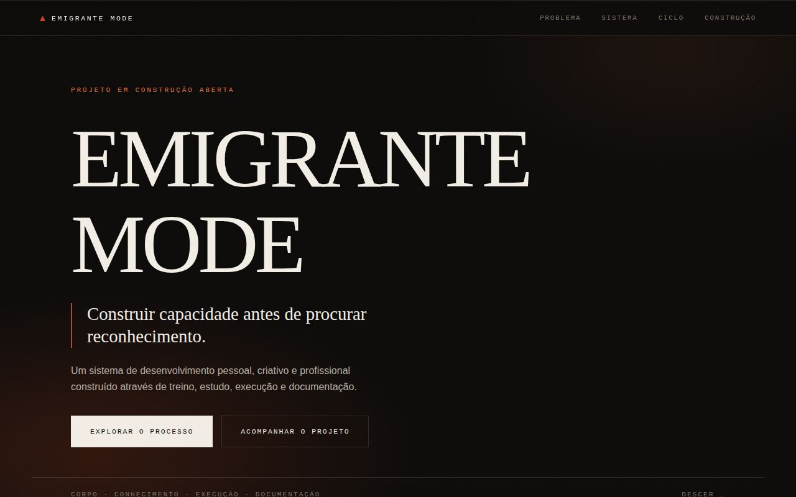

Diário de construção
REGISTO
O que foi feito, quando foi feito e o que ficou por resolver. Sem retoques: uma versão só entra aqui depois de existir.
-
Identidade e registo
A marca passou a ter forma própria e o projeto passou a ter onde documentar-se a si mesmo — que é, no fundo, o quarto pilar aplicado ao próprio site.
- Símbolo em SVG (silhueta vulcânica e estratos), usado no topo e como ícone do separador.
- Estrutura para imagens em
assets/img/, com convenção de nomes documentada. - Esta página de registo, com modelo de entrada pronto a copiar.
-
Landing funcional
Primeira versão pública do conceito: hero, seis secções e rodapé, em HTML, CSS e JavaScript puro — sem frameworks e sem pedidos externos.
- Cinco problemas encontrados na verificação em navegador e corrigidos antes do commit.
- Verificado a 1440×900, 1280×720 e 390×844: sem erros de consola nem overflow horizontal.
- Por resolver: o CTA final ainda não tem destino.

v0.1 — hero, 1280×800